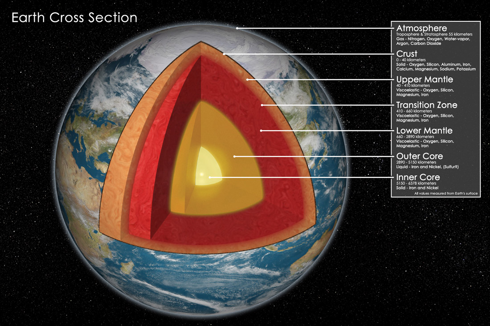
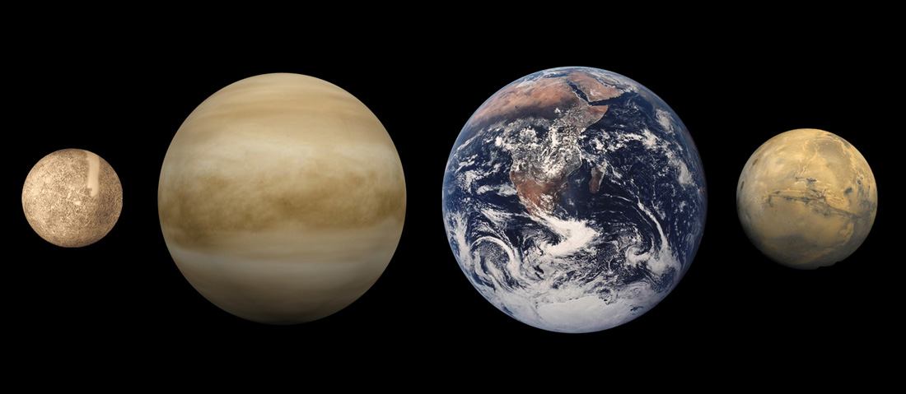
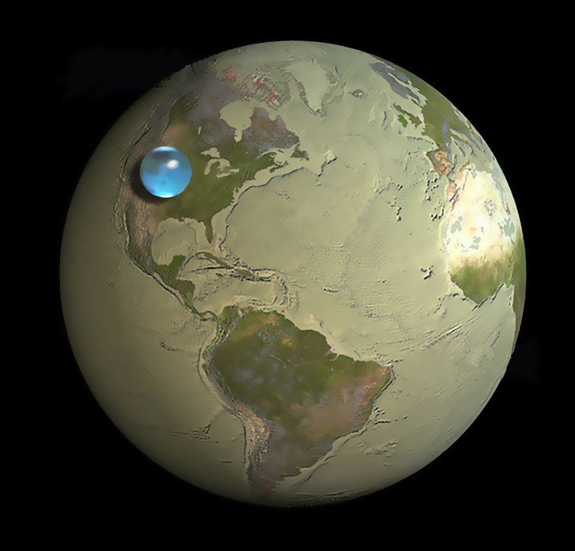
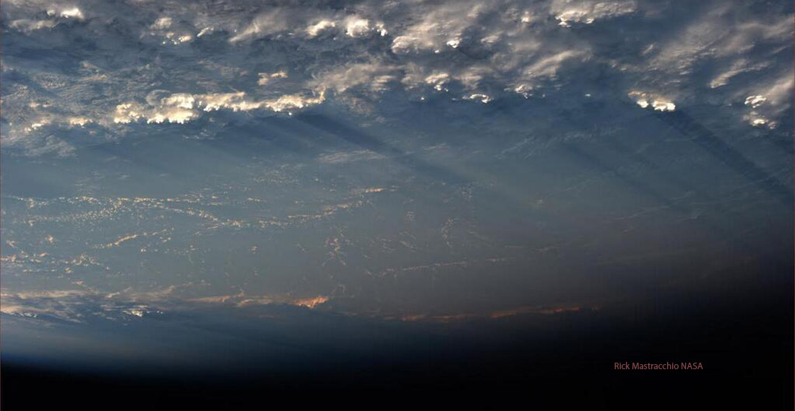
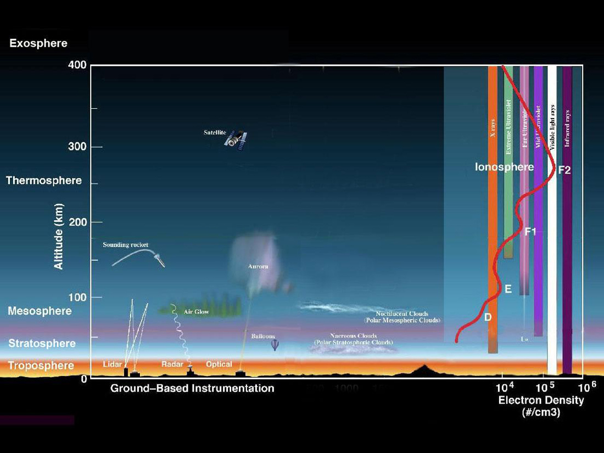
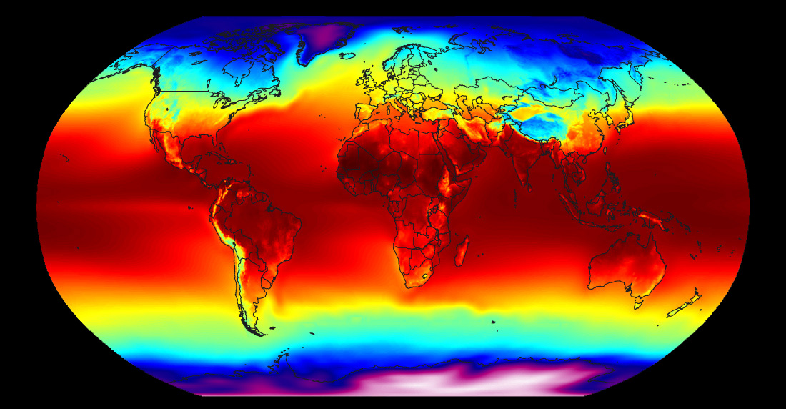
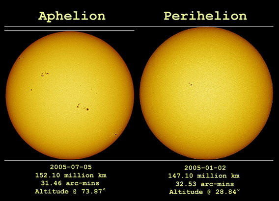

Welcome to Earth. The only planet known to humans to contain life... for now. Formed from the same gas and dust as the Sun and other planets about 4.54 billion years ago, it has changed constantly throughout its life. Here is a planet in the center of what is referred to as the "goldilocks zone" of planetary orbits. A zone where the heat from the closest star is not too hot, but not too cold. This planet has a few other parameters that make it the right place for life to evolve how it has. A few of them are an atmosphere, water, the right kind amounts of certain elements, a magnetic field and a hot core. Lets take a look at these and explore our planet, The Earth.
The Structure
The structure of the Earth seems initially simple. It has a core, an inner core, mantle and crust (shown below). Simple, right? Its actually more complicated than this and much more complicated when you think about the interactions of each and what they create and do. The magnetic field, mountains, continents, earthquakes, and volcanos are all caused by the heat, movement and interactions inside the Earth.

The overall diameter of the Earth is about 7,926 miles. Its the largest of the inner rocky planets with its closest sister, Venus, being only a few hundred miles in diameter smaller. Earth may be the largest of the inner planets, but Mars has a much higher mountains and much deeper canyons than we do. Very little is know about the surface structure of Venus, so there may still be some surprises awaiting on there.

The Earth's composition is mostly iron, oxygen, silicon, magnesium, sulfate and other relatively small amounts of elements. It it thought that the Earth's core is comprised of mostly iron. All these elements add up to the weight of 5.98x1024Kg. I'm sure it seems like a lot of mass, but its a very small number compared to that of the Sun. Most of the Earth's surface (about 71%) is covered by water. The rest is covered by the land we live on. When we remove all the water from the surface and put it into a small ball, we get this picture, showing just how little water we have compared to the rest of the mass of the Earth.

Magnetic Fields Galore!
The Earth's magnetic field is very important for many reasons here on Earth. It protects us from harmful solar radiation, helps us and animals navigate, and also helps to protect us from particles coming from extra-solar locations but also helps to create the beautiful auroras we see at the northern and southern latitudes. The video above shows the shape of the magnetic field. Why the teardrop shape? That's caused by its interaction with the solar wind. The solar wind is streaming charged particles through the solar system causing the magnetic field to bend around the Earth. Otherwise, it would look like a field map similar to that of a metallic bar magnet. Earth isn't the only planet to house an internalized magnetic field... Mercury, Jupiter, Saturn, Uranus and Neptune all have one, albeit, much larger, save for Mercury.
How is the magnetic field of the Earth created? Through a similar mechanism as that of the Sun! Its called the dynamo effect. This is the result of the rotation of the Earth and the inner cores. As they spin at different rates, the movement of metallic materials induces a magnetic field that extends into space. It is also a variable field that changes in strength over the surface of the planet and also with time. Over the last 71 million years, the field has shifted its pole locations and has flipped orientation. Scientists have concluded this by studying the change of the orientation of metals structures in the divergent tectonic plate regions at the mid-Atlantic ridge and others. Another object in our solar system has large magnetic variability, the Sun. But its variability is much shorter in period and is most likely caused by a different mechanism. The change in solar wind does effect the shape and strength of the Earth's magnetic field.
One very interesting aspect of the magnetic field that was recently discovered is that auroras' movements and shimmering effects are caused by the reconnection of diffracted magnetic field lines disturbed by the solar wind. A more thorough article on this explanation can be found here. Here are a couple videos to help illustrate the formation of auroras and how amazing they appear.
The Atmosphere

Earth's atmosphere is a multi-layer region of gases ranging in altitude of zero to approximately 440 miles into space. There are several overall layers named (from the surface up) the Troposphere, Stratosphere, Mesosphere, Thermosphere and Exosphere. At 13.6 psi, the troposphere is comprised of mostly Nitrogen, Oxygen, Argon, and Carbon Dioxide with other smaller quantities of gases. There also lies a significant amount of water vapor in the atmosphere that varies day to day and with altitude. The Troposphere of the Earth is where all of the life above the oceans reside, and even though it may hold all that life, it is only but a single portion of what drives the processes needed to support it.

The temperature of the surface of the Earth is not as extreme as that of Venus or Mars. This allows for a more suitable environment for the life forms residing inside. The extremes of Earth's temperatures are recorded (reliable sources) at 129°F in Death Valley, AZ and -126.6°F in Antarctica. The global average is currently about 58°F. This temperature is currently rising every year and will expect to rise even further in the future. Due to the planet's complexity, global averages do little to tell us exactly how the Earth is warming.
The videos and picture below shows how complex the distribution of temperatures is over the surface of the planet and how they change over time.

The weather on Earth is not as extreme as Venus but is much more extreme than that of Mars, save for the giant dust storms that can encompass the surface of Mars. Through differing temperatures at the poles of the Earth and the equator, changing seasons throughout the year, temperature fluctuations as it rotates, water evaporation, and many other factors, the Earth produces rain, clouds, winds, hurricanes, snow, etc. to give all types of weather events over the entire surface of the Earth. The two videos below just help illustrate the expanse of the weather systems that the Earth can produce.
The Orbit
Earth has a boring orbit. Its period is one year, 365.25 days. Nothing like any of the other planets. Oh, wait... its probably because everything we know about orbits is placed relative to ours. We base a few standards of astronomical measurements on our orbit. Like the Astronomical Unit which is approximately 93 million miles (9.2956x10ˆ7 miles). This is the average distance from the Sun over the course of one year. There is another measurement that's based from this relationship, which is the parsec. It is simply the distance to a star that has created an angle of one arc second based on the distance between the Sun and Earth or approximately 206,265 AU. The Earth's eccentricity (how far from exactly round it is) is 0.0167. This slight difference in orbit makes the furthest distance from the Sun to the Earth to be 94.5 million miles and the closest 91.4 million miles. That's three million miles of difference! It seems like a lot but check out the picture below that shows the size difference of the sun between the two points in space.

The orbital difference only changes the amount of sunlight by about 6.8% currently. The difference in distance from the Sun means that seasons are different lengths of time in different years by a small amount, roughly a fraction of a day. The Earth orbits the Sun at a speed of about 66,600 mph... that means if you watch the movement of the sun, you would see it change with respect to the stars by about one degree every day. That's roughly twice the size of the full moon.